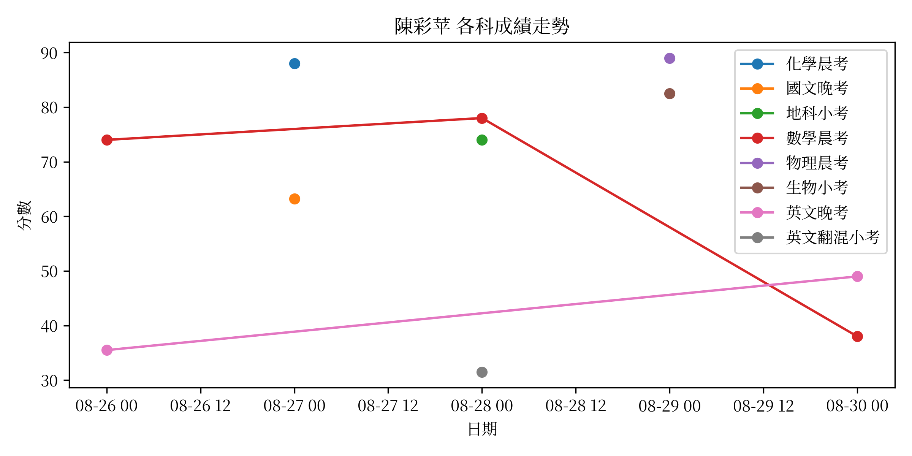

陳彩苹（學號：109008，華盛頓）
統計摘要
平均分數
標準差
PR
63.9
21.7
2.6%
成績走勢圖

表現待加強的考試
日期
科目
學生分數
班級平均
08-26
數學晨考
74.0
90.36
08-26
英文晚考
35.5
77.63
08-28
英文翻混小考
31.5
69.29
08-30
數學晨考
38.0
83.27
08-30
英文晚考
49.0
86.17
需要注意的考試
無需要注意的考試
下載完整 PDF